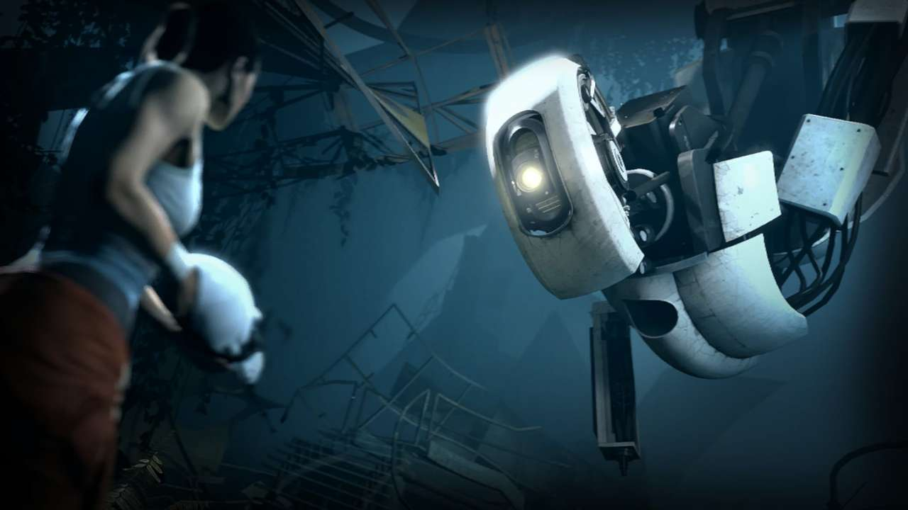

The Feeling of Being Watched: Inspired by Portal 2
Exploring the concept of how tension is built in a game to keep the player engaged by use of sound and emptiness
Triggering the brain into wanting to fill the blank spaces with something that might present a threat, thus inspiring the player to discover what and how to defeat this invisible threat

Here we have a look at the main villain of Portal 2; it is usually not seen in the game but we get glimpses of it and hear their voice judging
the choices we make during the game. Here is a scene where the player actually has a fcae to face confrontation with this character.